Obsah
Prokletí básníci
Impresionismus
Dekadence
Symbolismus
Civilismus, vitalismus, unanimismus
Anarchisté a buřiči
+ S.K.Neumann
+ Fráňa Šrámek
+ F.X.Šalda
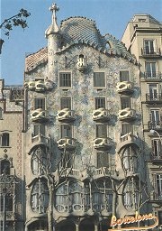
Gaudí: Casa Batlló
|
MODERNÍ UMĚLECKÉ SMĚRY
Kunsthistorik Gombrich charakterizuje 19. století jako dobu „permanentní revoluce“ a „hledání nových měřítek“ v umění. Platí to především pro poslední třetinu 19. století a začátek 20. století. Epochu uměleckých slohů, které formovaly celou civilizaci po několik staletí (gotika, baroko...), uzavřel romantismus. Realismus už zasáhl pouze některé druhy umění a v 70. letech 19. století se začínají hlásit o slovo moderní umělecké směry jako impresionismus, symbolismus, vitalismus a civilismus, počátkem 20. století potom fauvismus nebo abstrakce. Patří k nim také naturalismus, dekadence a secese. Pro uvedené směry je typické, že ovlivnily pouze některé umělecké druhy, hlavně literaturu a výtvarné umění. Existovaly paralelně vedle sebe, takže konkrétní dílo mohlo formovat několik „ismů“ zároveň. Řada umělců prošla ve svém životě několika etapami, ve kterých kladli důraz na různé umělecké směry. Gogh, Cézanne, Gauguin a další postimpresionisté dospěli k originálnímu individuálnímu stylu, který předurčil další vývoj umění.
Moderní (z francouzského moderne, tj. nejnovější, současný) umělci byli zprvu vysmíváni kritikou a publikum nejevilo o jejich tvorbu zájem. Přesto se rozhodli pro nelehkou cestu hledání nového uměleckého výrazu, kterou doprovázelo strádání, úsměšky, chudoba i vytěsnění na okraj společnosti (odtud označení prokletí básníci), a nevydali se pohodlnou cestou oficiální akademické tvorby. Historie jim dala za pravdu a dnes jsou právem oslavováni jako průkopníci moderního umění.
|
Fin de siècle
Pro duchovní atmosféru fin de siècle (franc. konec století) bylo typické odmítání starých tradičních hodnot. Dekadenti se odvracejí od skutečnosti a unikají do vysněného světa umění a požitků. Kolem sebe spatřují jen úpadek a nudu. Centrem moderního umění byla Francie, kam směřovali umělci z dalších evropských zemí (Gogh, Mucha, Maeterlinck...). Většina moderních uměleckých směrů dostala své jméno v Paříži. Trochu stranou stály Spojené státy americké, ale i odsud přicházely výrazné impulzy jako Whitmanův vitalismus a civilismus.
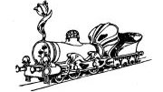
Hugo Boettinger: Lokomotiva v secesi držená
|
Umění pro umění
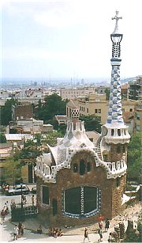
Gaudí: Park Güell
|
Lartpourlartismus
Termínem lartpourlartismus [-pur-] (z francouzského l’art pour l’art, tj. umění pro umění) označujeme tendence, které se začaly projevovat v literatuře druhé poloviny 19. století. Základním principem lartpourlartismu byl kult „čistého“ umění, které je samo o sobě cílem. Autoři se soustřeďují na formální stránku svých děl a nezajímají se o mimoestetické funkce umění, např. společenskou, výchovnou nebo etickou. Propagátorem tohoto přístupu k umělecké tvorbě byl filozof Victor Cousin [kuzen], autor pojednání O pravdivém, krásném a dobrém (1853). Označení „umění pro umění“ prý vymyslel Victor Hugo. Za „manifest“ lartpourlartismu je považována předmluva Théophila Gautiera [teofil gotje] k jeho románu Slečna de Maupin (1834). Podle něj je tu umění především „samo pro sebe“, nejdůležitější je krása a její prožitek, který může umělecké dílo zprostředkovat. Gautierova programová báseň Umění, ve které požadoval od básníka především formální mistrovství, se stala krédem parnasistů. Gautiera obdivoval i Baudelaire a na jeho myšlenky navázali dekadenti. Prokletí básníci jako Verlaine a Mallarmé z tohoto směru přímo vyšli, ale brzy se vydali jinou cestou, zcela protikladnou. Stoupenci lartpourlartismu sice pohrdali lůzou a úspěchem a chtěli se obracet pouze ke kultivovanému publiku, ale brzy se stali oficiálními spisovateli a souputníky malířského akademismu. Jejich popularita a oslavování kritikou zabraňovaly prosazení moderních uměleckých tendencí.
|
Parnas
Parnas bylo volné sdružení francouzských básníků, kteří se ztotožnili s myšlenkou „umění pro umění“. Vůdčí osobností a teoretikem parnasistní školy byl Leconte de Lisle [lil]. Hlásili se k němu spisovatelé Banville, Prudhomme, Coppée, Heredia a zprvu také Verlaine nebo Mallarmé. Parnasisté spatřovali ideál v čisté poezii a absolutní kráse. Psali neosobní básně prosté romantických citů, inspirovali se výtvarným uměním, mytologií, exotikou nebo minulostí. Současné problémy je nezajímaly. Společně vystoupili sborníkem Současný Parnas (1866), už v 70. letech se ale skupina rozpadla. V Čechách přijal parnasistní estetiku Jaroslav Vrchlický.
Který mýtus se váže k řecké hoře Parnassos?
|
Individualismus a subjektivismus
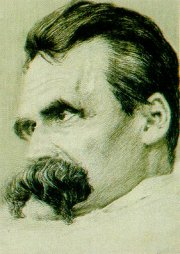
Friedrich Nietzsche
|
Individualismus a subjektivismus
Konec století byl ve znamení vypjatého individualismu a subjektivismu. Šlo o přirozenou reakci na dřívější pozitivismus, materialismus a snahy o vědeckost, objektivní a nezaujatý přístup ke skutečnosti. Nový životní postoj předjímal už německý filozof Arthur Schopenhauer (1788-1860), autor pojednání Svět jako vůle a představa. Tvrdil, že život nabízí pouze nouzi, nudu, osamění, soupeření a šílenství. Dočasným východiskem z těchto strastí může být umění, které je vyhrazeno pouze geniálním jedincům, konečným pak popření vůle. Německý myslitel Friedrich Nietzsche (1844-1900), šel ve svých dílech Zrození tragédie z ducha hudby, Tak pravil Zarathustra nebo Antikrist ještě dál. Podle něj je podstatou světa vůle k moci. Nietzsche odmítá ideály, morálku i náboženství a považuje je za výplody chorých lidí a slabochů. Hlásá kult silného individua – nadčlověka a pesimistickou myšlenku věčného návratu. Pro vyznavače individuality se stal symbolem boje proti konvencím Satan, který se dokázal vzepřít samotnému Bohu. Ital Cesare Lombrosi (1836-1909) zdůraznil v knize Génius a šílenství přínos výlučných jedinců, které odděluje od bláznovství jen krůček. Proti státu jako hlavnímu utlačovateli svobodné vůle bojovali anarchisté. Tyto převratné myšlenky se setkaly s nadšeným ohlasem především mezi umělci.
|
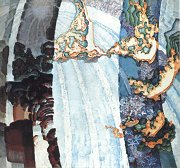
Kupka: Kosmické jaro I
Nietzsche tvrdil, že člověk prochází třemi životními etapami – velbloud, lev a dítě. Co je pro ně typické? Ve které z nich se právě nacházíš?
Jak rozumíš Nietzschovým výrokům „Bůh je mrtev“ a
„člověk je provaz natažený mezi zvířetem a nadčlověkem“?
Jmenuj nějakého génia. V čem spočívá jeho genialita?
|
Bohéma
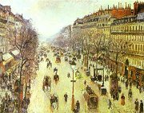
Pissarro: Bulvár Montmartre v mlžném ránu
Jaký je rozdíl mezi operou, operetou a kabaretem?
|
Bohéma
Pohrdání konvencemi a upjatou morálkou doprovázené neochotou podřídit se zkostnatělým normám vyvrhlo řadu zapřisáhlých individualistů na okraj společnosti. Zvláště umělci začali žít nespoutaným bohémským životem a vytvářeli si vlastní pravidla. Bavili se v nevěstincích a dalších pochybných podnicích. Upíjeli se v hospodách (zvláště oblíbený byl absint, později zakázaný kvůli negativnímu vlivu na psychiku). Hlásali volnou lásku. Spisovatelé se kvůli otevřenosti, s níž popisovali tento způsob života, ocitali před soudy a jejich díla byla cenzurována a konfiskována z mravnostních důvodů. Centrem bohémy i neřesti byl pařížský vrch Montmartre nebo Latinská čtvrť, kde vznikalo stále více nočních podniků. Novinkou byly kabarety. K nejslavnějším patřil literární kabaret Černá kočka (Le Chat Noire) a Moulin Rouge, kde se tančil odvážný kankán. Nesmrtelnost jim zajistili hlavně malíři, kteří na svých plátnech věrně zachytili návštěvníky i zaměstnankyně těchto zábavních podniků. V polovině 19. století vzniklá také opereta. Věnovali se jí Offenbach, Strauss, Lehár, Kálmán, Friml, Nedbal a další hudební skladatelé.
|
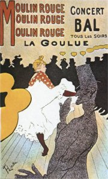
Plakát od Toulouse-Lautreca
|
Výtvarné umění
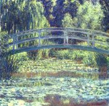
Monet: Můstek v japonské zahradě
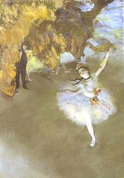
Degas: Hvězda
|
Výtvarné umění
Po obnovení obchodu s Japonskem začaly do Evropy proudit zdejší dřevořezy a další umělecká díla, tzv. japonerie, která přinášela zcela jiný pohled na kompozici a barevnost. Moderní umělci začali nejen pod jejich vlivem hledat nové výrazové prostředky. Velkou překážku představovala akademická tvorba. Oficiální malíři mohli od roku 1667 vystavovat svá díla v pařížském Salonu, ale mladé umělce mezi sebe nepustili. Museli si proto uspořádat neoficiální výstavy. Salon odmítnutých (1874) proslavila díla impresionistů, Salon Nezávislých (1884) představil tvorbu postimpresionistů a Podzimní salon (1905) byl ve znamení skandálu s fauvisty. Tyto výstavy způsobily poprask a kritikové z nich byli v šoku. Nový výtvarný projev se ale postupně prosadil. Průkopníky zmíněných moderních uměleckých směrů byli malíři. Auguste Rodin a další sochaři měli nejblíže k symbolismu. Architekturu tyto směry neovlivnily.
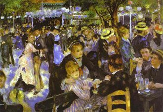
Renoir: Moulin de la Galette
|
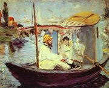
Manet: Claude Monet maluje na své lodi
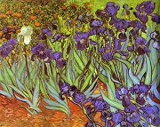
Gogh: Kosatce
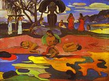
Gauguin: Mahana no atua
|
Secese

Mucha: Princezna Hyacinta
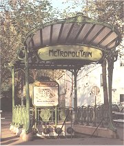
Vstup do pařížského metra
|
Secese
Secese (z latinského secessio, tj. odchod) byla posledním pokusem o vzkříšení jednotného slohu. Nazývala se rovněž Art Nouveau [nuvo], Jugendstil nebo Modern Style. Na přelomu 19. a 20. století začali umělci bojovat proti úpadku řemesel způsobeném tovární výrobou. Secese nejdříve zasáhla výtvarné a užité umění (bytové doplňky, šperky, příbory...), záhy se ale rozšířila také na módu, tanec, divadlo nebo literaturu. Pro secesi byla charakteristická filigránská zdobnost, ornamentálnost, plošnost, důraz na detail a kvalitní zpracování materiálu. Architekti se odvracejí od historizujících stylů, kombinují sklo s kovem a využívají nové jednotící prvky – odvážné křivky, elipsy, stylizované rostlinné motivy a dekorativní výzdoba (vitraje, mozaiky). Kromě obytných domů vznikají veřejné stavby jako nádraží, v Paříži potom stanice metra. Vrcholem secese jsou geniální stavby španělského architekta Antonia Gaudího (katedrála Sagrada Familia v Barceloně). Významnými secesními malíři byli Čech Alfons Mucha nebo Rakušan Gustav Klimt. V Čechách je skvostem secesní architektury pražský Obecní dům, Jan Kotěra postavil muzeum v Hradci Králové, Ladislav Šaloun Husův pomník na Staroměstském náměstí a Stanislav Sucharda pomník Františka Palackého v Praze. Secese ovlivnila také knižní kulturu. Velmi oblíbené začaly být bibliofilské tisky.
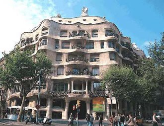
Gaudího Casa Milá posměšně přezdívaná Kamenolom
|
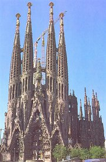
Gaudí: Sagrada Familia
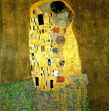
Klimt: Polibek
Které secesní stavby znáš?
|
Moderní literatura v Čechách
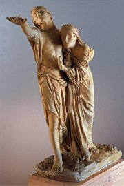
Bílek: Slepci
Srovnej význam slov moderní, módní, moderna, móda, modernismus a modistka.
|
Moderní literatura v Čechách
V Čechách se během 90. let 19. století ustavily tři hlavní skupiny umělců hlásících se k modernímu umění. Dekadenti Karásek, Procházka nebo Hlaváček se semkli kolem časopisu Moderní revue. Několik reformně orientovaných kněží vydávalo časopis Nový život, ustálilo se pro ně označení Katolická moderna. Nejvolnějším uskupením byli signatáři manifestu Česká moderna (1895), který sepsali Machar a Šalda. Nástup mladých umělců doprovázely bouřlivé polemiky s generací ruchovců a lumírovců, zvláště tzv. spory o Hálka a Vrchlického. Modernisty oslovil pouze Zeyer a zahraniční autoři.
Následující generaci spisovatelů spojovalo v mládí nadšení pro anarchismus, proto bývají označováni jako buřiči. Šrámek, Gellner, Toman nebo Dyk přispívali do Neumannova časopisu Nový kult. K jejich tvorbě měl blízko i Petr Bezruč.
|
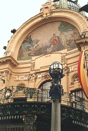
Obecní dům, náměstí Republiky
Kteří spisovatelé podepsali manifest České moderny?
Je manifest České moderny spíše uměleckým nebo politickým prohlášením?
Vyber hlavní myšlenky manifestu.
Jaký je názor autorů manifestu na umění, literární kritiku, společnost, vlastenectví a politiku?
Co víš o jednotlivých signatářích manifestu?
|
Internetové stránky
Impresionismus
Postimpresionismus
Symbolismus
Klimt, secesní malíř
Rodin, sochař
Gaudí, architekt
Pokorný: Vídeň 1900, článek
Secese
Secese
Secese
Secese
Secese
Exkurze
Secesní Praha
Mucha museum, Praha
Obecní dům, Praha
Musée Rodin, Paříž
Gaudí, Barcelona
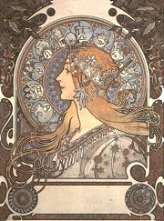
Mucha: Zodiac
|
Doporučená četba
Absintová panna aneb Smích pařížských kabaretů, přel. H.Zahradníčková, Tichá Byzanc, Praha 1997
Básníci pařížské bohémy, Odeon, Praha 1984
Básníci soumraku, Italská poezie pozdní secese, Paseka, Praha 2001
Česká básnická moderna, Praha 1987
Čapek, Karel: Francouzská poezie a jiné překlady, SNKLHU, Praha 1957
Dějiny českého výtvarného umění, 1890-1938, IV/1, Academia, Praha 1998
Důvěrný prostor, Nová dálka, Umění pražské secese, Enigma, Praha 1997 (katalog k výstavě)
Fischer, Jan O. a kol.: Dějiny francouzské literatury 19. a 20. století, 1. a 2. díl, 1789-1870-1930, Academia
Kouba, Pavel: Nietzsche, Filosofická interpretace, Československý spisovatel, Praha 1995
Kšicová, Danuše: Secese, Slovo a tvar, Masarykova univerzita, Brno 1998
Lamač, Miroslav: Myšlenky moderních malířů, Odeon, Praha 1989
Marek, Jaroslav: Česká moderní kultura, Mladá fronta, Praha 1998
Mrázovi, Bohumír a Marcela: Secese, Obelisk, Praha 1971
Mucha, Jiří: Alfons Mucha, Mladá fronta, Praha 1994
Neznámý Parnas, přel. J.Pokorný, Praha 1988
Nezval, Vítězslav: Moderní básnické směry, Československý spisovatel, Praha 1989
Nietzsche, Friedrich: Antikrist, přel. J.Fischer, Votobia, Olomouc 2001
Nietzsche, F.: Tak pravil Zarathustra, přel. O.Fischer, Votobia, Olomouc 1995
Osm básníků z Belgie, SNKLHU, Praha 1958 (Verhaeren, Maeterlinck...)
Pijoan, José: Dějiny umění, 8. a 9. díl, Odeon
Poezie přelomu století, Praha 1984
Pytlík, Radko: Na přelomu století, Československý spisovatel, Praha 1988
Schopenhauer, Arthur: Svět jako vůle a představa, přel. M.Váňa, Nová tiskárna, Pelhřimov 1998
Strohsová, Eva: Zrození moderny, Praha 1963
Wittlich, Petr: Česká secese, Odeon, Praha 1985
Zerbst, Rainer: Antoni Gaudí, Taschen, 1993
|
Vypracuj písemný referát o některé z uvedených knih.
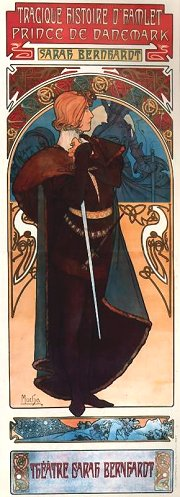
Muchův plakát k představení Sarah Bernhardtové v roli Hamleta
|
|